For everyone
A few minutes, any day
You don't need to play a sport. Short routines for the morning, a desk break or the end of the day.
Desk Reset
about 4 minutes, 5 stretches
Neck, shoulders and chest after hours at a screen. Most of it works from your chair.
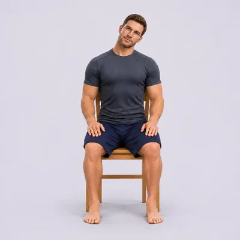
1 Side Neck Tilt 25 s each side 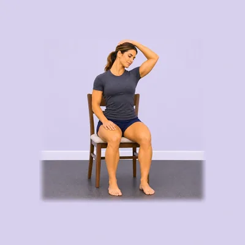
2 Levator Release 25 s each side 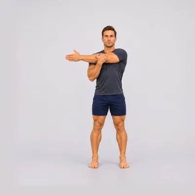
3 Cross-Body Shoulder 25 s each side 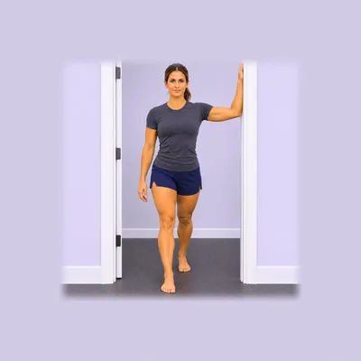
4 Doorway Chest Opener 40 s 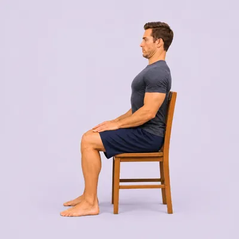
5 Chin Tuck 30 s
First Light
about 6 minutes, 6 stretches
An easy head-to-toe wake-up. Move the spine, open the hips, loosen the shoulders.
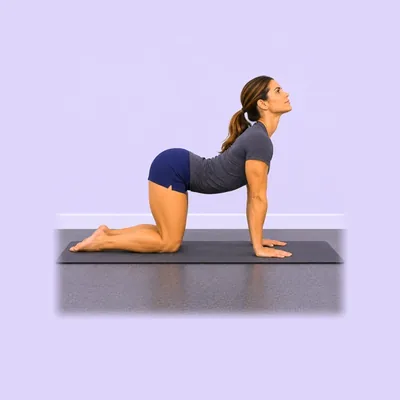
1 Cat–Cow 45 s 2 Child’s Pose 45 s 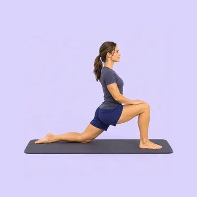
3 Low Lunge 40 s each side 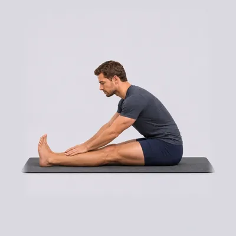
4 Seated Forward Fold 45 s 5 Cross-Body Shoulder 35 s each side 6 Side Neck Tilt 30 s each side
Lights Out
about 6 minutes, 4 stretches
Four long, quiet holds to settle down before sleep.
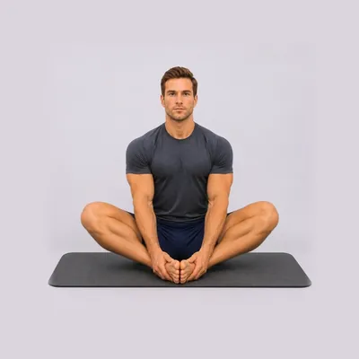
1 Butterfly 75 s 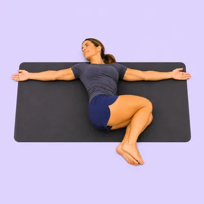
2 Supine Twist 60 s each side 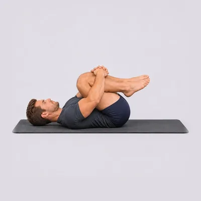
3 Knees to Chest 60 s 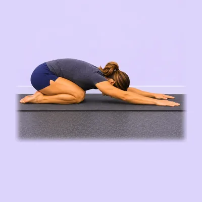
4 Child’s Pose 75 s
How it works
Pick a short routine Short routines for the morning, a desk break or the evening. Every hold time can be changed with − and +.
Press Start A timer ring counts down each hold. Once MeFlex has been opened, it works offline too.
Listen for the switch A soft chime, and an optional voice that reads the stretch’s name. No need to watch the screen.
Try it now
Stretch pictures are AI-generated.
Health notice. Stretching should feel like mild discomfort, never pain. Move slowly, do not bounce, and stop if anything hurts. You never have to hold for the full time; shorten a hold, skip a stretch or end the routine whenever you like. MeFlex is a general fitness tool and is not medical advice. If you have a health condition or are unsure what is right for you, check with a qualified health professional first.
Who MeFlex is for